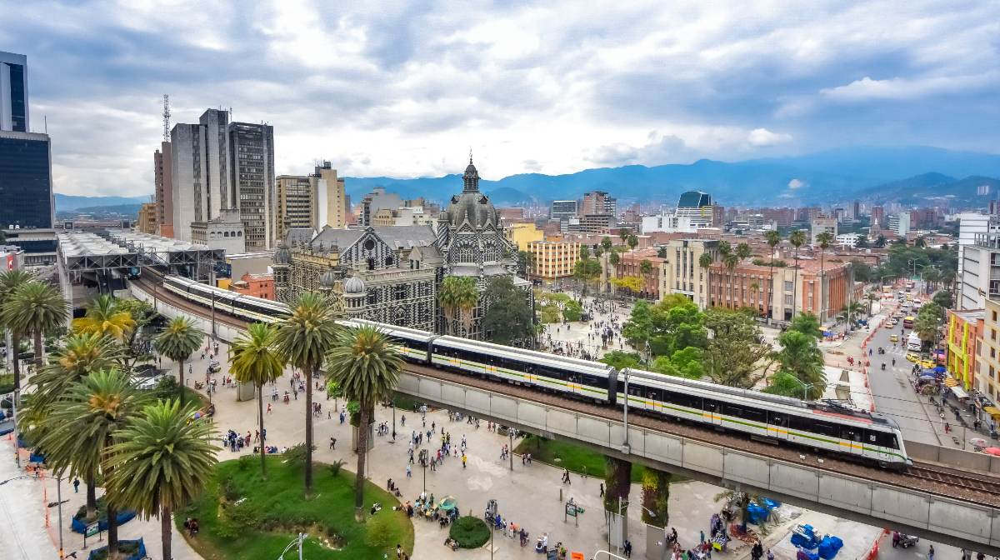

- Inicio
- Contacto
- Félix Restrepo(Filólogo y jesuita)
- Luis Eduardo Vieco(Pintor y Dibujante)
- Luis Ángel Arango(Financista y Abogado)
- Carlos Vieco Ortiz(Músico y Compositor)
- Fernando Botero(Pintor y Escultor)
- Bandeja Paísa
- Sancocho Antioqueño
- Mazamorra paisa
- Calentao
- Mondongo
- La Troba Paisa
- Carrillera
- Pasillo
- Reggaeton
- Tango
- Parque Arví
- Museo de Antioquia
- Jardín Botánico de Medellín
- Pueblito Paisa
- Plaza Botero
- Parque Explora
- Feria de las Flores
- Desfile de la Antioqueñidad
- Desfile de Mitos y Leyendas
- Feria Taurina de La Macarena
- Festival Internacional de Poesía
- El gobernante Juan del Corral declara ciudad a Medellín(1813)
- La primera terminal de transportes(16 de febrero de 1984)
- El primer viaje del metro de Medellín(30 de noviembre de 1995)
- El vuelo inicial del primer metrocable(7 de agosto de 2004)

CONOCE MEDELLÍN
Población
2.569 millones(2020)
Clima
Es conocida como “La Ciudad de la Eterna Primavera” debido a su clima agradable y templado durante todo el año, con una temperatura promedio de 22 grados Celcius (72 grados Fahrenheit)